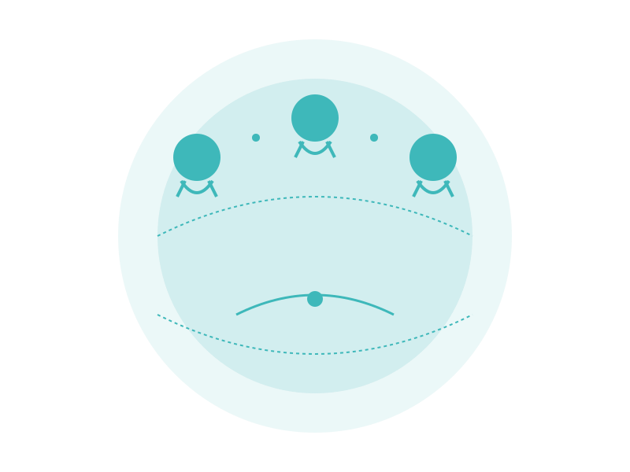

BVR Project Studio
Real Projects. Real Impact.
The execution engine of BVR Innovation Group — where bold strategies are translated into real-world projects, with measurable outcomes.
Real Projects. Real Impact.
The execution engine of BVR Innovation Group — where bold strategies are translated into real-world projects, with measurable outcomes.
We help development partners, entrepreneurs, ecosystem builders, and business leaders design and deliver challenge-driven projects that create growth, transformation, and tangible results.
If you have a big idea and need it turned into a high-impact project — this is where it begins.
We don't just consult. We build. Our work spans sectors and solutions, always grounded in execution.
We co-create structured, fundable, and practical projects based on your goals, environment, and opportunity landscape.
We assemble agile teams to implement your innovation, growth, or transformation projects with precision and accountability.
We help SMEs, corporates, and networks design market-facing initiatives that lead to measurable growth.
We help test and scale innovation projects that are ready for real-market feedback and adoption.

Every project goes through a structured yet flexible 4-stage process:

Deep immersion into your challenge, goals, and operating environment.
Co-designing the right structure, timeline, partners, and metrics for success.
Assembling and managing the team, resources, and systems to deliver results.
Embedding outcomes, handover models, and long-term strategies to ensure continuity and growth.

Whether you're a donor, a business network, a corporate venture, or an ecosystem actor — if you have an idea and need it built, we're your team.